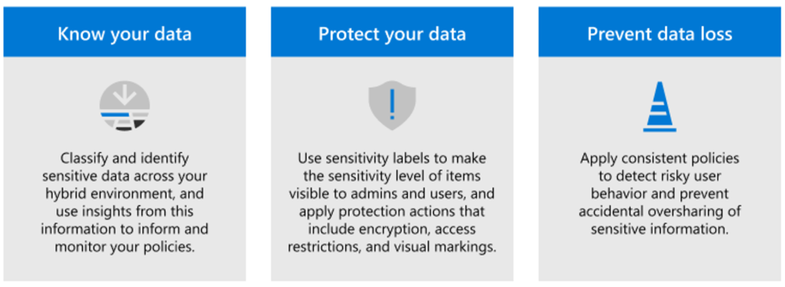
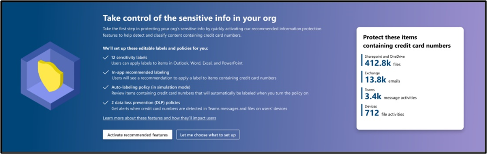
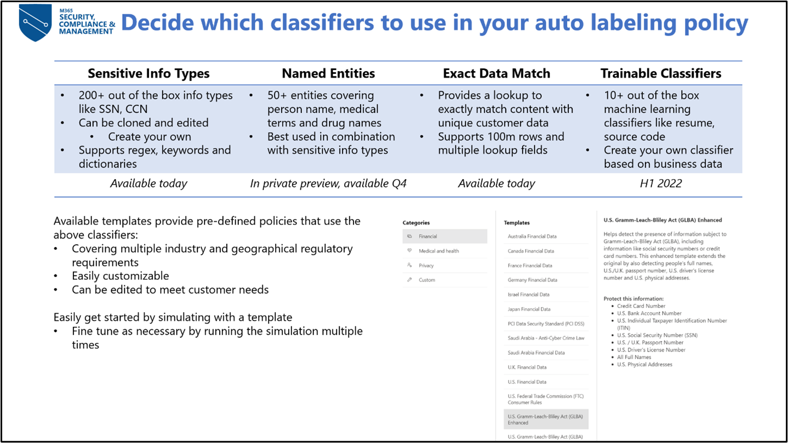
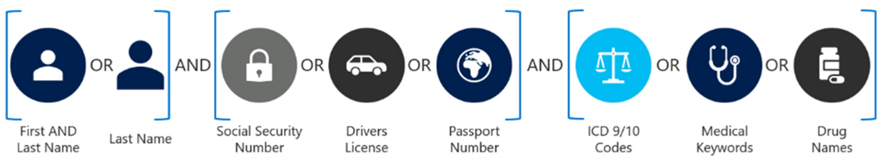
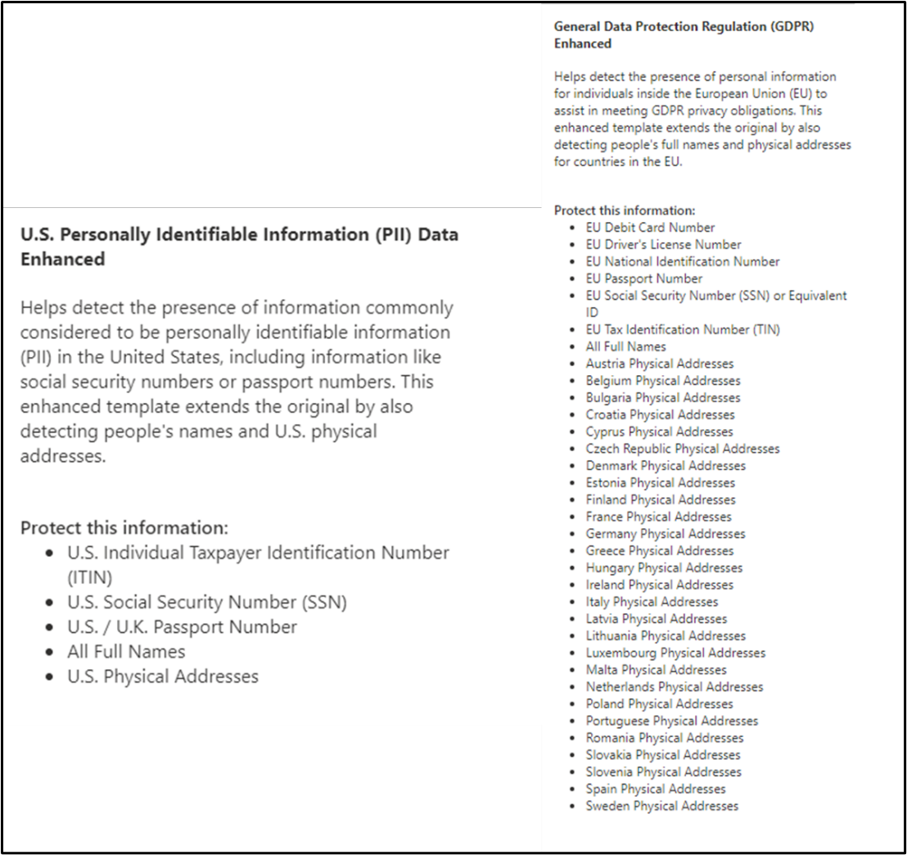
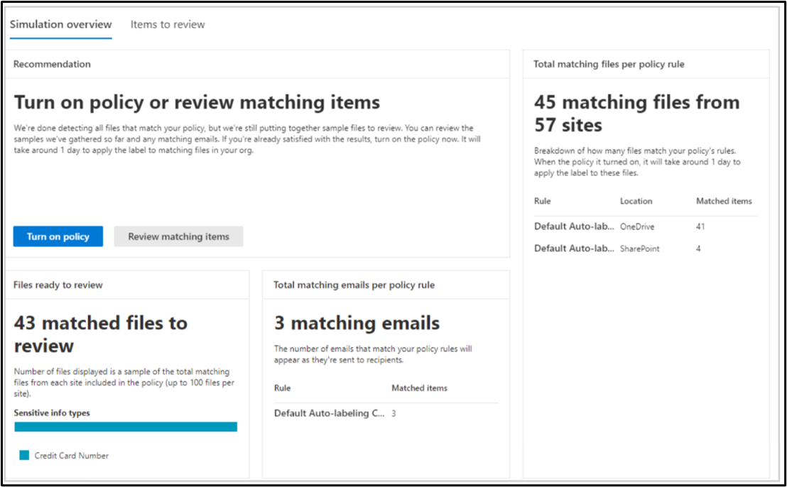
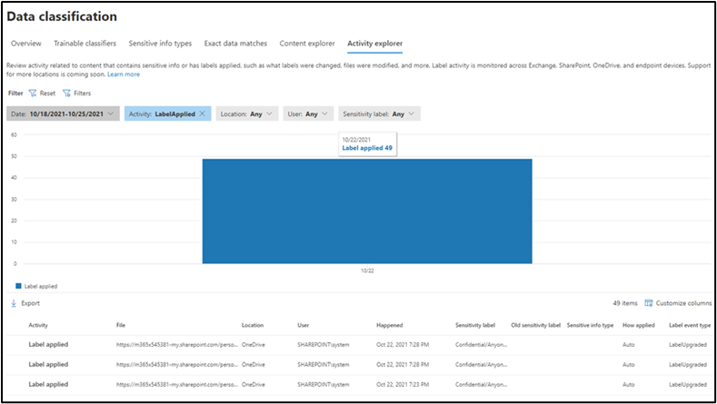

Microsoft Information Protection (MIP) is a built-in, intelligent, unified, and extensible solution to protect sensitive data across your enterprise – in Microsoft 365 cloud services, on-premises, third-party SaaS applications, and more. MIP provides a unified set of capabilities to know your data, protect your data, and protect against data loss across Microsoft 365 apps (e.g., Word, PowerPoint, Excel, Outlook) and services (e.g., Microsoft Teams, SharePoint, and Exchange).

Figure 1: MIP life cycle
Some of the key MIP capabilities include Sensitive information types (SIT), Trainable classifiers, Data classification, Sensitivity labels, Data loss prevention, Endpoint data loss prevention etc.
The foundation of MIP is the ability to classify data by our Data Classification Service, please see the MIP constellation below to view how the MIP functionalities all work together.
Figure 2: How MIP functionalities work together
Identifying and classifying sensitive items that are under your organization's control is the first step in the Information Protection discipline. Foundational to Microsoft are its classification capabilities—from out-of-the-box sensitive information types to machine learning trainable classifiers to automatically finding and classifying sensitive content at scale. Sensitive Information Types are pattern-based classifiers which detect sensitive information like social security, credit card or bank account numbers within a tenant, and help customers to identify, evaluate, and protect their data. Data Classification Service and specifically Sensitive Information Types allow customers to define and identify what information is considered sensitive in their environments. Once you identify what sensitive content is important to you, you can leverage this data classification across your Microsoft 365 Compliance features including, but not limited to: Data Loss Prevention, Communication Compliance, Insider Risk Management, Auto-Labeling, Retention, and Sensitivity Labels.
We announced several key enhancements to the intelligence and built-in capabilities of MIP across Microsoft 365 applications and services. These capabilities help organizations reduce the number of false positives as they accurately classify ever-increasing amounts of data. These capabilities also increase the coverage of classified data as they go across Microsoft 365 services and workloads.
Per the scope of this playbook, we’ll focus on auto-labeling overview with some basic understanding of the capabilities:
Sensitivity labels are at their basic level a tag, that is customizable, persistent, accessible to applications, and visible to users. Labels once applied to documents and email become the basis for enforcing data protection policies throughout the tenants’ digital estate. When a label is applied to a file or email it is persisted as document metadata. When a label is applied to a SharePoint site or OneDrive for business the label persists as container metadata.
There are multiple methods for automatically applying a label to emails and documents based on their content in Microsoft 365, two of the key ones are:
Client-side auto-labeling: Client-side auto-labeling happens on the client workstation as the user creates or edits a document or email using Word, Excel, PowerPoint, Outlook, and Office web applications (OWA). Depending on the content detected, the label is applied automatically or recommended to the users based on the properties of the label. A default label can also be assigned to documents and emails. This form of client-side labeling does not evaluate document content based on conditions defined on a global policy, but it is based on properties defined for each label.
Service-side auto-labeling: Service-side auto-labeling is sometimes referred to as auto-labeling for data at rest and data in transit. Unlike client-side auto-labeling, service side auto labeling does not depend on the client to analyze the document content while it is being created. Instead, service-side auto-labeling reviews content that is stored (at-rest) in SharePoint or OneDrive document libraries, or that is "in-flight" or being sent within Exchange. For instance, when a message is submitted to transport. All policy review and application are done within the service. Service-side auto-labeling policies are created and configured from the Information Protection section of the Compliance Center under the Auto-labeling policy tab. Auto-labeling policies don't support recommended labeling because the user doesn't interact with the labeling process. Instead, the administrator runs the policies in simulation mode to help ensure the correct labeling of content before applying the label.
Comparison of auto-labeling solutions:
The table below provides a comparison of Service-side, Client-side, and Defender for cloud apps auto-labeling solutions that can help you identify when a particular solution is appropriate for labeling needs.
Capabilities
Service side
Client side
Defender for cloud apps (MCAS)
Application support
SharePoint, OneDrive and Exchange Online
Word, PowerPoint, Excel or Outlook Microsoft 365 apps, or AIP plugin for Office
SharePoint, OneDrive and third-party services supported by Defender for cloud apps
File types supported
.docx, .xlsx, .pptx and related formats
.docx, .xlsx, .pptx and related formats
.docx, .xlsx, .pptx and related formats, PDF
Policy scoping
By site, group or user
By label
By service, site, folder
Classification options
Standard Sensitive Info Types; Custom Sensitive Info Types (incl. dictionaries); Exact Data Matching Trainable classifiers (in private preview)
Standard Sensitive Info Types; Custom Sensitive Info Types (incl. dictionaries); Exact Data Matching; Trainable Classifiers
Standard Sensitive Info Types; Custom Sensitive Info Types (incl. dictionaries); Exact Data Matching; Trainable Classifiers; Fingerprint; Regular Expression
Labeling conditions
Sensitive content; Content is shared; Recipient properties; Sender properties; Email subject; Document title; Attachment extension; Attachment can't be scanned; Attachment is encrypted; Email headers
Sensitive content in document or email body; Sensitive content in attachment
Automatic labeling: user can override; Recommended label: user can accept or dismiss
Label visible after user opens document. Content markings are applied on save
Applied to
New and existing documents (including simulation mode); New emails
Content that's created or edited by users
New and existing documents (file policy); Content being downloaded; Content being uploaded
Behaviors
Label is applied; Outbound email is protected; Outbound attachment is protected (Office and PDF documents); Protection is applied to document; Content markings are applied after user opens document and saves it
Label is applied; Document is protected; Email is protected; Attachment is protected (Office attachment only); Content marking is applied
Label is applied; Protection is applied; Content markings are applied after user opens document and saves it
Label external incoming emails
Yes
On reply or forward
N/A
Labeling limits
25k documents labeled per day
None
100 documents labeled per day (can be extended upon request)
How does client and service side labeling work in different labeling scenarios?
A principle we have is that client/end user provided labels always overrides service basedservice-based ones. In addition, label priority is used in determining when and how an automatic label will be applied. The following table lists some common labeling scenarios, the label setting (i.e., auto or recommended label) and the expected outcome or behavior.
Scenario
Label Setting
Behavior
Content has no label
Client-side recommendation
Recommend new label
Client-side auto labeling
Apply new label
Service-side auto labeling
Apply new label
Content has label manually applied
Client-side recommendation
Recommend new label if higher sensitivity
Client-side auto labeling
No action. Manually applied label takes precedence
Service-side auto labeling
No action. Manually applied label takes precedence
To understand your licensing requirements and options for MIP, see the Information Protection section from the Microsoft 365 licensing documentation. Below is the sensitivity labeling licensing info for your quick reference, however, we encourage you to reference the M365 licensing documentation for up-to-date information.
For manual sensitivity labeling, the following licenses provide user rights:
Microsoft 365 E5/A5/G5/E3/A3/G3/F1/F3/Business Premium
Enterprise Mobility + Security E3/E5
Office 365 E5/A5/E3/A3/F3
AIP Plan 1
AIP Plan 2
For both client and service-side automatic sensitivity labeling, the following licenses provide user rights:
Microsoft 365 E5/A5/G5
F5 Compliance
F5 Security & Compliance
Microsoft 365 E5/A5/G5 Information Protection and Governance
Office 365 E5
For client-side automatic sensitivity labeling only, the following license provides user rights:
Enterprise Mobility + Security E5/A5/G5
AIP Plan 2
To apply and view sensitivity labels in Power BI and to protect data when it's exported from Power BI to Excel, PowerPoint, or PDF, the following licenses provide user rights:
Microsoft 365 E5/A5/G5/E3/A3/G3/F1/F3/Business Premium
Enterprise Mobility + Security E3/E5
AIP Plan 1
AIP Plan 2
Note
G3 and G5 are the Office 365 services/plans for Government organizations.
For feature-level licensing requirements please refer to Licensing PDF file.
Sensitivity labels from the MIP solution let you classify and protect your organization's data, while making sure that user productivity and their ability to collaborate isn't hindered. Members of your compliance team who will create sensitivity labels need permissions to the Microsoft 365 compliance center.
By default, Global Administrators for your tenant have access to this admin center and can give compliance officers and other people access, without giving them all the permissions of a tenant admin. For this delegated limited admin access, add users to the Compliance Data Administrator, Compliance Administrator, or Security Administrator role group.
Alternatively, using the default roles, you can create a new role group and add either Sensitivity Label Administrator or Organization Configuration roles to this group. For a read-only role, use Sensitivity Label Reader.
These permissions are required only to create and configure sensitivity labels and their label policies. They are not required to apply the labels in apps or services. If additional permissions are needed for specific configurations that relate to sensitivity labels, those permissions will be listed in their respective documentation instructions.
To be able to review matched items we find while in simulation mode (process before deployment that allows you to verify what items we will help you label if you turn on the policy), make sure you have the following permissions:
Content Explorer List viewer: Membership in this role group allows you to see each item and its location in list view. The data classification list viewer role has been pre-assigned to this role group.
Content Explorer Content viewer: Membership in this role group allows you to view the contents of each item in the list. The data classification content viewer role has been pre-assigned to this role group.
Auto labeling is a built-in Microsoft service that triggers off sensitive content found in files in SharePoint Online, OneDrive for Business and emails in Exchange Online. Define what sensitive information you want us to protect using regulatory templates, 200+ out of box sensitive info or custom types, named entities, Exact Data Match and ML models in an auto labeling policy. We will simulate what files are detected that match your auto-labeling policy in our simulation mode, so you can review and be confident in our matches before agreeing to allow us to automatically label those documents.
Protecting Sensitive Information in SharePoint/OneDrive⚓︎
Sensitive files are automatically detected and labeled at rest.
Office files for Word (.docx), PowerPoint (.pptx), and Excel (.xlsx) are supported.
These files can be auto-labeled at rest before or after the auto-labeling policies are created. Files cannot be auto-labeled if they are part of an open session (the file is open).
Currently, attachments to list items aren't supported and won't be auto-labeled.
Maximum of 25,000 automatically labeled files in your tenant per day.
Maximum of 100 auto-labeling policies per tenant, each targeting up to 100 sites (SharePoint or OneDrive) when they are specified individually. You can also specify all sites, and this configuration is exempt from the 100 sites maximum.
Existing values for modified, modified by, and the date are not changed because of auto-labeling policies—for both simulation mode and when labels are applied.
When the label applies encryption, the Rights Management issuer and Rights Management owner is the account that last modified the file. If this account is no longer in Azure Active Directory, the label won't be applied because these values can't be set.
Protecting Sensitive Information in Exchange⚓︎
Sensitive emails are automatically detected and labeled in transit/ as they are sent. For Exchange, it does not include emails at rest (mailboxes).
Note
Emails detected in simulation mode will not be labeled when the policy is turned on, as we only label emails in transit and those emails were sent before the policy was enforced.
Unlike manual labeling or auto-labeling with Office apps, PDF attachments as well as Office attachments are also scanned for the conditions you specify in your auto-labeling policy. When there is a match, the email is labeled but not the attachment.
For these Office files, Word, PowerPoint, and Excel are supported. If the label applies encryption, they are encrypted by using Office 365 Message Encryption (OME).
If you have Exchange mail flow rules or data loss prevention (DLP) policies that apply IRM encryption: When content is identified by these rules or policies and an auto-labeling policy, the label is applied. If that label applies encryption, the IRM settings from the Exchange mail flow rules or DLP policies are ignored. However, if that label doesn't apply encryption, the IRM settings from the mail flow rules or DLP policies are applied in addition to the label.
Email that has IRM encryption with no label will be replaced by a label with any encryption settings when there is a match by using auto-labeling.
Incoming email is labeled when there is a match with your auto-labeling conditions:
If the label is configured for encryption, that encryption isn't applied.
If the label is configured to apply dynamic markings, be aware that this configuration can result in the names of people outside your organization.
When the label applies encryption, the Rights Management issuer and Rights Management owner is the person who sends the email. There currently isn't a way to set a Rights Manager owner for all incoming email messages that are automatically encrypted.
Requirements for configuring Service-side Auto-labeling⚓︎
Simulation mode:
Auditing for Microsoft 365 must be turned on. If you need to turn on auditing or you're not sure whether auditing is already on, see Turn audit log search on or off.
At the time the auto-labeling policy runs, the file mustn't be open by another process or user. A file that's checked out for editing falls into this category.
Custom sensitivity information types apply only to content that is added or modified in SharePoint or OneDrive after the custom sensitivity information types are created.
To test new custom sensitive information types, create them before you create your auto-labeling policy, and then create new documents with sample data for testing.
Step 1: Create and publish sensitivity labels⚓︎
One or more sensitivity labels created and published (to at least one user) that you can select for your auto-labeling policies. For these labels:
It does not matter if the auto-labeling in Office apps label setting is turned on or off, because that label setting supplements auto-labeling policies
If the labels you want to use for auto-labeling are configured to use visual markings (headers, footers, watermarks), note that these are not applied to documents.
We recommend that you have your label taxonomy and hierarchy defined in a label policy applied to all users to help them get started with manual labeling from the information worker side.
[Optional] While it is important to have your label taxonomy mostly defined, this does not include the need to define protection actions like encyrption. Encryption can be added to the label properties after the fact. Since protections are checked every time a document is opened, changes in protections to labels will be enforced.
If the labels apply encryption:
- When the auto-labeling policy includes locations for SharePoint or OneDrive, the label must be configured for the Assign permissions now setting.
- When the auto-labeling policy is just for Exchange, the label can be configured for either Assign permissions now or Let users assign permissions (for the Do Not Forward or Encrypt-Only options).
In defining your labels, you can set up in-app auto-labeling recommendations, where you define what sensitive information you are concerned about, and information workers will see a banner that says that recommends them to label this document with that label if your defined sensitive information is found in the document they are working with.
You can define a default label in your label policy that is automatically applied to files and emails in use that have not been manually labeled.
You can easily get started with all things labeling by using our easy set-up of default label schema, label policy, and auto-labeling policy.
If you don't immediately see this option, first select Show all.
In the Overview tab you should see the following banner:

Figure 4: Banner for easy set-up of default policies located on the MIP overview page
Activate recommended features to set up our default policy configurations designed to protect credit card numbers.
You will only see this option if you have not set up labeling, in-app labeling recommendation, auto-labeling policy, Teams DLP, or DLP for devices. If you have already set up an auto-labeling policy, you will not be shown this banner but can configure our default auto-labeling policy on your own: Learn about the default labels and policies for Microsoft Information Protection - Microsoft 365 Compliance | Microsoft Docs
If you don't immediately see this option, first select Show all.
In the Overview tab you should see the following banner:
Figure 5: Banner for easy set-up of default policies located on the MIP overview page
Activate recommended features to set up our default policy configurations designed to protect credit card numbers.
You will be asked to pick two of your existing labels to use in the auto-labeling policy in simulation mode. We recommend using a “Confidential†like sublabel for both, with the higher count auto-labeling credit card policy having more protections than the low count.

Figure 8: Different types of classifiers that can be used in auto-labeling policy: sensitive information types, named entities (in private preview), exact data match, and trainable classifiers (coming in 2022)
You want to protect the sensitive data in your organization. What is sensitive in your organization? Start with our sensitive information types. We have 200+ out of the box sensitive information types that we help detect in your organization. Check content explorer to see which sensitive information types we are finding.
So, what information is there? Do you detect a lot of sensitive information that needs to be protected with labeling?
If you are unsure of what data to protect or how to get started, look at our provided Financial, Medical and Health, and Privacy templates. These provide a great baseline of sensitive information types to protect given different regulations and industries. You can customize these templates to add more sensitive information types you are concerned with.
Named entities recognition (NER), which is something we are doing right now in private preview, allows you to be able to identify entities like physical address, names, and more with other sensitive information types to be more confident that it is something you are looking for. This works great to reduce false positives.
As you get more advanced or have more business use cases, you can also explore things like exact data matching which looks at your specific customer data that you are passing in detects and labels for this customer's information. This is a more complex process that requires more time to configure and execute but can bring your false positive rates to near zero allowing you to be more assertive with auto-labeling policies.
Another option is trainable classifiers where we use machine learning, to understand what content in your organization looks like from business files like resumes to source code and protect that information.
These different classifier types are not mutually exclusive to each other. You can and in fact we encourage you to try out combinations of different types of classifiers. For example, you can use a sensitive information type (SIT) for PII together with named entity recognition for person's names in a policy trying to detect large amounts of identity information in a table, or you can use trainable classifiers together with a custom SIT to detect invoices above a certain amount. You can also use EDM as an exclusion to a rule based on a regular SIT to avoid identifying employee PII as potential customer PII, etc.
Pick your scope:
Option 1: ALL – SharePoint sites, OneDrive accounts and Email users
Option 2: Subset of sites or accounts – can use PowerShell for longer lists
Roadmap Note
We are working to support OneDrive groups
Select a label to use for auto-labeling, but note:
This label will not go into effect until you turn on your policy from simulation mode.
You can always simulate the policy. Check the matches, and then go back and edit the label used for the policy.
The protections of the label you select will then apply to every document automatically labeled.
After 12 hours, you can analyze the results of our auto-labeling simulation. You will be shown files and emails that match your auto-labeling policy configurations that would be labeled if your policy was turned on. Review these matches to make sure they match with what you are expecting.
If you are seeing high amounts of false positives, fine-tune your policy with the following recommendations:
Increase the thresholds of sensitive information types found to determine severity
It is okay to use different thresholds for individual classifiers
Understand confidence levels and how they are defined
Low confidence may be good!
Try using a low confidence with high threshold or a higher confidence level
Group like information types together
Combine multiple SITs to detect combinations that matter (e.g. a Social Security Number on its own may not be relevant without a person associated, but an SSN together with an account number, a person's name or a medical condition may be).
Switch from looking for “Any of these†to “All of theseâ€
Use Boolean operators to combine groups
Look for SSN AND Driver’s License instead of SSN OR driver’s License

Figure 9: Example of how to use Boolean operators to combine groups of sensitive information
More advanced refinement strategies if the above don’t work:
Switch this policy to be for client-side auto labeling, since false positives are much less problematic with client-side since the user can take care of the "mistake" with one click
Use EDM to eliminate false positives by matching only known sensitive information (ex. actual customer PII)
Clone and modify the built-in SITs to include additional conditions, such as keywords, more stringent matching of values or stronger formatting requirements.
Modify a custom SIT to exclude known prefixes, suffixes or patterns. For example, a custom SIT to detect phone numbers might trigger for every email if your email signatures or document headers include your offices phone numbers. Excluding the sequences common to your company's phones as prefixes to your custom SIT can prevent the rule from triggering for every email or document.
Include additional dictionary-based SITs as conditions to narrow down the matches to those that talk about the relevant topics. ex. a rule for matching patient diagnostics may be enhanced by requiring the presence of words like diagnostic, diagnosis, condition, symptom, patient, etc.
When you are confident in the matches you see in simulation, turn on your policy from simulation mode so that we can start auto labeling the files and emails in your organization. You can see what’s getting labeled through activity explorer.
Scenario 1: Protecting payment information of customers⚓︎
A lot of customers have an interest in protecting their financial data surrounding payment data to comply with financial regulations. This usually entails a combination of bank account numbers, PII (Personal Identifiable Information) of customers, credit card numbers and account information.
Figure 10: Out of the box financial templates you can use for auto-labeling
Similarly, we have seen an interest in protecting the personal data of both customers and employees. We have auto-labeling templates to protect U.S. Personally Identifiable Information (PII) Data, General Data Protection Regulation (GDPR), and more.

Figure 12: Out of the box privacy templates you can use for auto-labeling
Simulation results showing number of files and emails matched in how which locations are available when you click on the auto-labeling policy for more details.

Figure 13: Example of simulation mode showing number of files matched for review
After an auto-labeling policy is enabled, you can view the labeling activity in Activity Explorer:

Figure 14: Activity Explorer showcases auto labeling activities
If you have client-side auto-labeling set up, but no service side auto-labeling policy:
Use client-side auto labeling or recommendations and service-side auto labeling in combination, with the same conditions but with different thresholds, ex. use high confidence matches for service-side auto labeling and use low or medium confidence for a client-side recommendation, which gives the user an option to dismiss the label if it isn't appropriate for the content and apply a different label.
If you have labels set up, but no service side auto-labeling policy:
Create auto labeling policies that trigger for different confidence levels of the SITs with different counts (ex. one high confidence count or multiple medium confidence count) to avoid false positives without risking leakage of large amounts of sensitive data that may not meet the most stringent conditions of higher confidence.
Tip
Use content explorer to understand where data is present that may need to be included in an auto-labeling policy.
Increase the thresholds of sensitive information types found to determine severity
It is okay to use different thresholds for individual classifiers
Understand confidence levels and how they are defined
Low confidence may be good!
Try using a low confidence with high threshold or a higher confidence level
Group like information types together
Switch from looking for “Any of these†to “All of theseâ€
Use Boolean operators to combine groups
Look for SSN AND Driver’s License instead of SSN OR driver’s License
Figure 15: Example of how to use Boolean operators to combine groups of sensitive information
Advanced method:
Use Exact Data Matching to only look for a specific set of data like your specific customer information (this is a more complex process that takes time to configure)
What do I do if I have over 1 million matched files and cannot enforce my auto-labeling policy?⚓︎
First check to make sure all the matches are accurate. If not, please finetune the policy for false positives.
If the matches all look accurate but the matches still exceed 1 million, scope your policies to a smaller subset of locations first and enforce that policy. Then go in and create another identical policy scoped to the remaining locations.
How does changing label protections affect auto-labeling?⚓︎
For SharePoint and OneDrive, when a file is open, we retrieve the updated protection actions of the labels. Therefore, any updates to the label protections will be reflected on the document the next time it is opened.
For Exchange, emails are stamped with the label and associated protections at the time of the email being sent. If a label protection is modified, previously labeled emails with that label will retain the old permissions, but any new emails sent will have the new label protections.
What happens if I need to change my label schema after enforcing an auto-labeling policy?⚓︎
We recommend that you have your established label schema in place before continuing to auto-labeling, but understand that sometimes minds change and revisions are needed.
Decide what your new label schema is
Create the new label schema. Edit existing labels if possible to fit the new label hierarchy, but do not delete any old labels yet.
Determine if the label you used for auto-labeling is still appropriate?
If so, you are all set.
If not, determine the replacement label you would like to use.
Make sure the replacement label has a higher label priority than the original label.
Edit the auto-labeling policy to use the new label with higher label priority
Simulation mode is a process between configuring the policy and enforcing it. It allows you to see what matches we find that match your policy configuration that will be labeled if you enforced your policy. No labeling is done in simulation mode. It serves as a reassurance assessment of our sensitive information type detection before we apply any labels for you automatically.